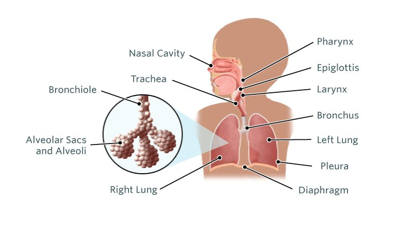
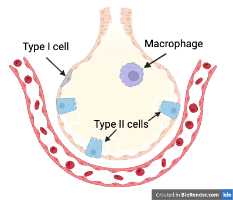
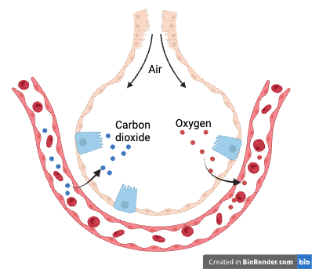

| SP‑C Deficiency ‣ Course Overview How Lungs Work How Do We Breathe? What Is Surface Tension? How Is Surfactant Made? Words to Know SP‑C Deficiency What Is SP‑C Deficiency? What Causes It? Signs & Symptoms Getting a Diagnosis Treatment & Care Outlook & Prognosis Living with SP‑C Questions for Your Doctor Resources Downloads & Links |
Part 1 of 3 — How Lungs Work. Start here before moving to the SP‑C sections. Understanding how healthy lungs work makes everything else much easier to follow. ▶ Watch Video
How Do We Breathe? Watch how air moves through the lungs and oxygen gets into the bloodstream — and see the three cell types in action. What Happens When You Breathe In Every breath starts with a muscle called the diaphragm. It sits just below your lungs. When it tightens and pulls down, it creates space — and air rushes in. That air travels through your nose or mouth, down your trachea (say: TRAY-kee-uh, your windpipe), and into your chest. There, the airway splits into two tubes called bronchi — one going to each lung. Those tubes keep branching into smaller and smaller ones, like a tree. At the very end of those tiny branches are small air sacs called alveoli (say: al-VEE-oh-lie). This is where the real work happens. Normal Alveoli  The walls of each alveolus are made up of three important cell types:
The Gas ExchangeType I cells are extremely thin — just one cell thick.  Tiny blood vessels called capillaries wrap around the outside of each alveolus. Gases pass right through those thin walls:
This swap — oxygen in, carbon dioxide out — is called gas exchange. It happens with every single breath, around the clock. Why This MattersAll of this only works if the alveoli stay open. In the next section, you will learn about a force called surface tension that tries to collapse them — and why the Type II cells are so important in keeping that from happening. |